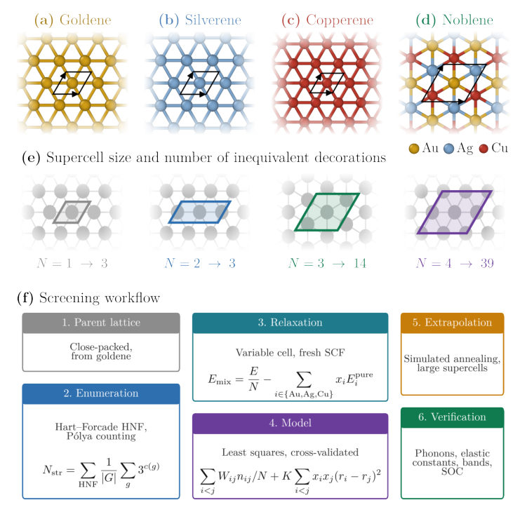
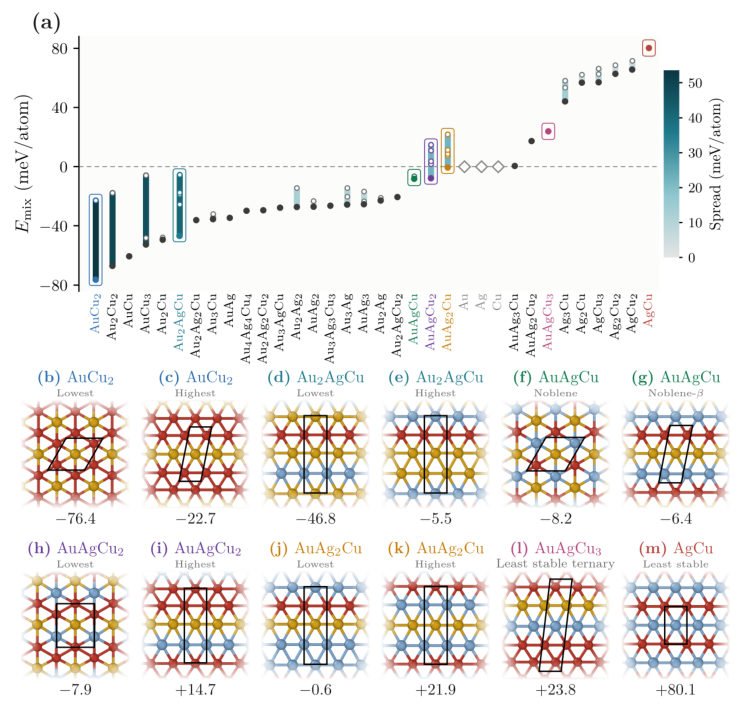
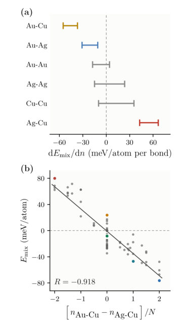
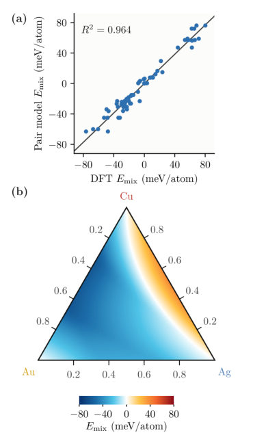
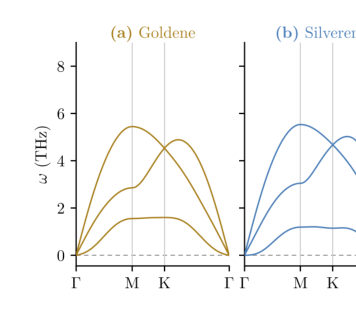

Authors: Marcelo Lopes Pereira Junior
Type: theory · Category: other · PDF: https://arxiv.org/pdf/2609.02709v1
Analysis basis: full PDF text, analyzed in chunks





Summary. This work exhaustively maps the ordered phase space of Au-Ag-Cu monolayers, demonstrating that local atomic arrangement, not just stoichiometry, controls the material's energy. They identify a unique, stable phase called Noblene, which is predicted to be synthesizable because it shares the lattice structure of known gold monolayers. The study provides a detailed methodology for predicting novel 2D quantum materials.
Why it may be interesting. While focused on condensed matter materials science, the rigorous application of DFT to map complex, highly ordered, low-dimensional phases provides a powerful template for studying emergent order in quantum materials.
Main problem. To exhaustively map the ordered Au-Ag-Cu monolayer alloys and determine that atomic arrangement, rather than simple elemental proportion, dictates the mixing energy in these 2D systems.
Main result. The equimolar ordering, named Noblene, is identified as the only dynamically stable and metallic structure where every atom is surrounded exclusively by unlike species, suggesting a plausible synthesis route from Goldene.
Method. The study employs Density Functional Theory (DFT) combined with an exhaustive enumeration of derivative superstructures and a pair model fit to calculate mixing energies and elastic constants.
Model / system. The physical system is the Au-Ag-Cu ternary alloy realized as a two-dimensional monolayer on a close-packed hexagonal lattice. The analysis focuses on the interplay between local atomic ordering and overall chemical composition.
Key observables. Mixing energy (meV/atom), Poisson's ratio, elastic constants ($C_{11}, C_{22}, C_{12}, C_{66}$), and electronic structure (PDOS).
Important parameters / regimes. The competition between Au-Cu contacts (binding) and Ag-Cu contacts (non-binding) governs the energetics.
Assumptions / limitations. The analysis is restricted to two dimensions (in-plane) and uses DFT calculations based on the PBE functional.
Figures summary. Figures illustrate the four reference monolayers (Au, Ag, Cu, and Noblene) on the close-packed lattice, and show the mixing energy landscape for various supercell stoichiometries.
Paper structure. The paper systematically enumerates superstructures, calculates their energetics via DFT, establishes that local ordering dominates composition, and finally characterizes the unique, stable Noblene phase using electronic and elastic properties.
Two-dimensional metals became a laboratory reality with the isolation of Goldene, a gold sheet one atom thick released by chemical exfoliation, which raises the question of what alloying can achieve on the same close-packed lattice. Here we combine an exhaustive enumeration of derivative superstructures with density functional theory to map the ordered Au-Ag-Cu monolayer alloys, relaxing every symmetry-inequivalent arrangement up to four atoms per cell and extending the set with larger cells selected by a fitted model. We find that the arrangement of the atoms, and not their proportion, controls the mixing energy, since the spread among the orderings of a single composition is several times the step between neighboring compositions, one composition spans more than 50~meV/atom between two arrangements of the same three atoms, and at two compositions the arrangement decides the sign. The energetics is carried by a competition between Au-Cu contacts, which bind, and Ag-Cu contacts, which do not, and bulk enthalpies computed under the same protocol show that this chemistry is not uniformly rescaled in two dimensions, since Au-Cu orders more strongly in the monolayer than in the crystal while the other two weaken. A pair model completed by an elastic size-mismatch term reproduces the computed energies to a few meV/atom and returns a composition landscape whose convex hull no balanced ternary composition reaches. One equimolar ordering, which we name Noblene, is the only structure in which every atom is surrounded exclusively by unlike species, and it is dynamically stable and metallic, and carries a Poisson's ratio above one half, higher than that of any of the three pure monolayers. Since Noblene sits on the lattice that Goldene already realizes, the route that produced Goldene is a plausible starting point for its synthesis.